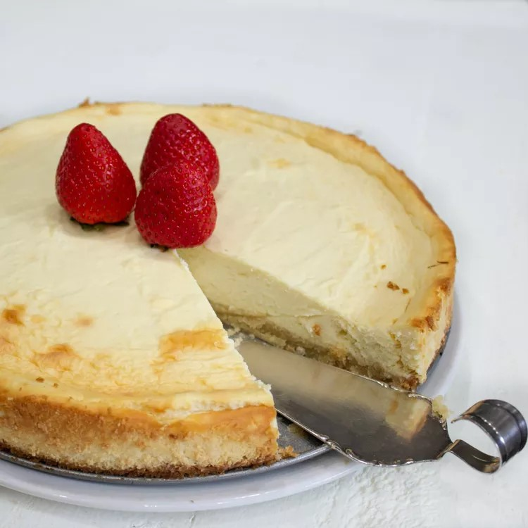

Low Carb Cheesecake

Description
Finish your low carb feast with this decadent, rich cheesecake!
Lower in carbs and high in taste and creamy texture
It's simply the perfect ending!
Ingredients
For the crust
- 2 cups blanched almond flour
- ⅓ cup butter, melted
- 3 tablespoons powdered erythritol sweetener
- 1 teaspoon vanilla extract
For the filling:
4 (8 ounce) packages cream cheese, softened
1 ¼ cups powdered erythritol sweetener
3 large eggs
1 tablespoon lemon juice
1 teaspoon vanilla extract
¼ teaspoon lemon zest
Method
- Preheat the oven to 350 degrees F (175 degrees C). Grease a 9-inch springform pan and line the bottom with parchment paper. Wrap the bottom and sides of the pan with aluminum foil if worried about leakage.
- Stir almond flour, butter, erythritol, and vanilla extract together in a small bowl until well combined; the mixture will be crumbly. Press into the prepared pan bottom.
- Bake on the center rack in the preheated oven until just golden, 10 to 12 minutes. Allow to cool for 10 minutes.
- Meanwhile, beat cream cheese and powdered sweetener together using an electric stand or hand mixer at low speed until fluffy. Beat in eggs, one at a time. Add lemon juice, vanilla extract, and lemon zest; beat until well combined.
- Bake on the center rack in the preheated oven until almost set and slightly jiggly in the center, 45 to 55 minutes.
- Remove from the oven and let cool in the pan. Keep in the pan, cover, and refrigerate to fully set, at least 4 hours to overnight. Run a knife gently around the sides, unclamp, and carefully remove the pan; it should come right off.